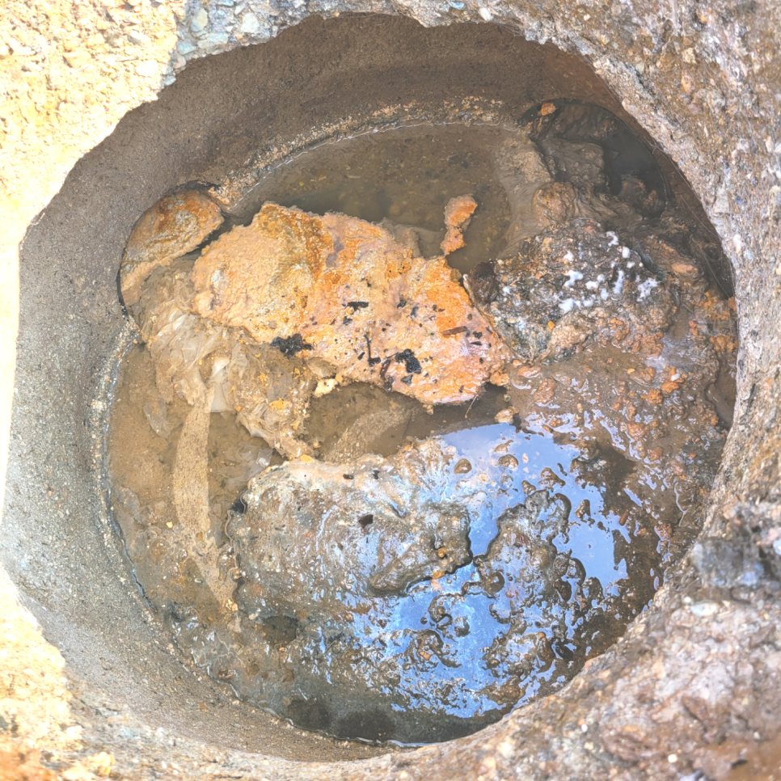
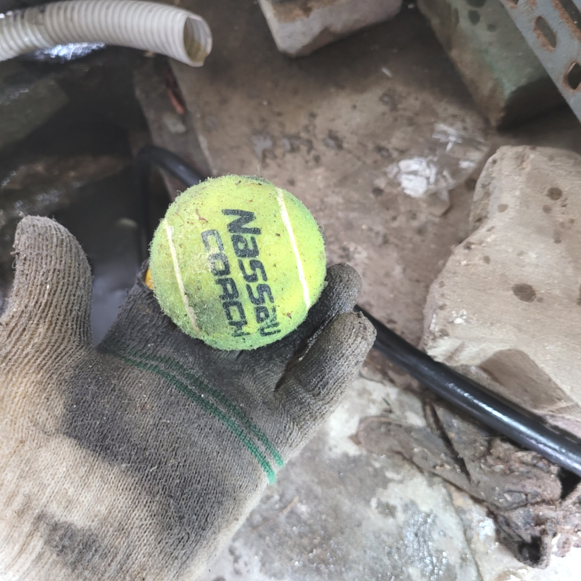
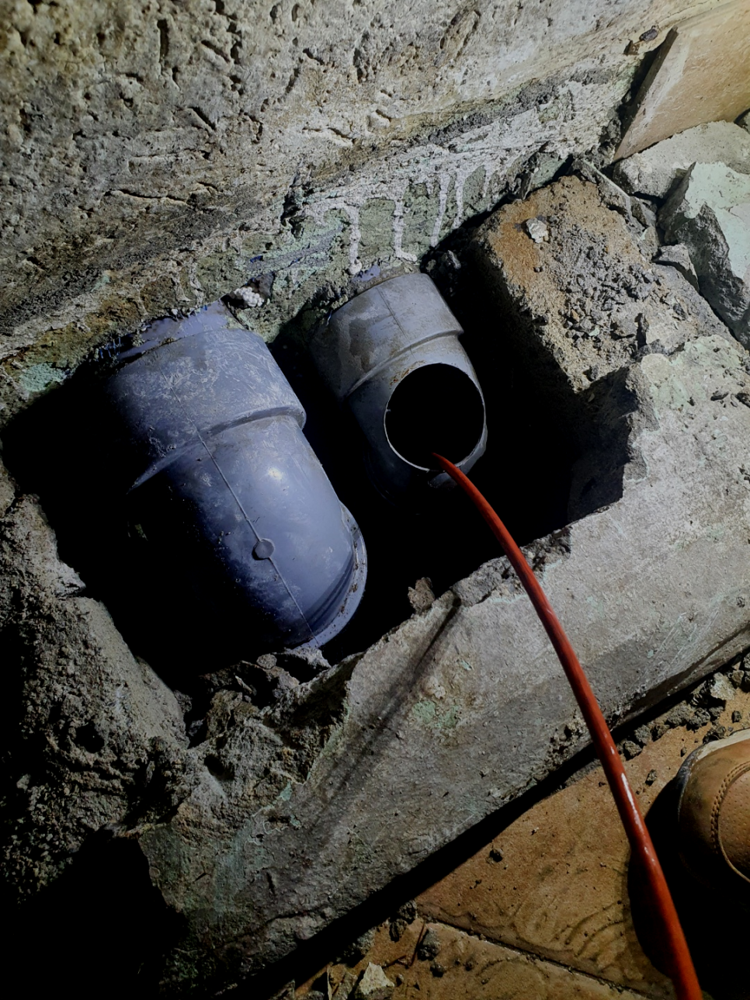
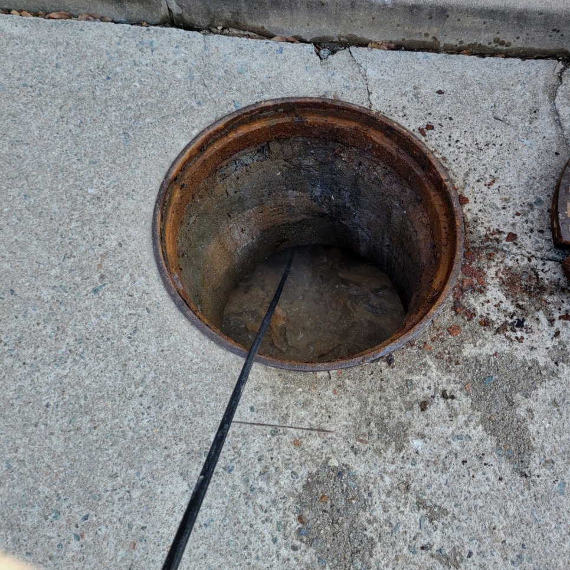
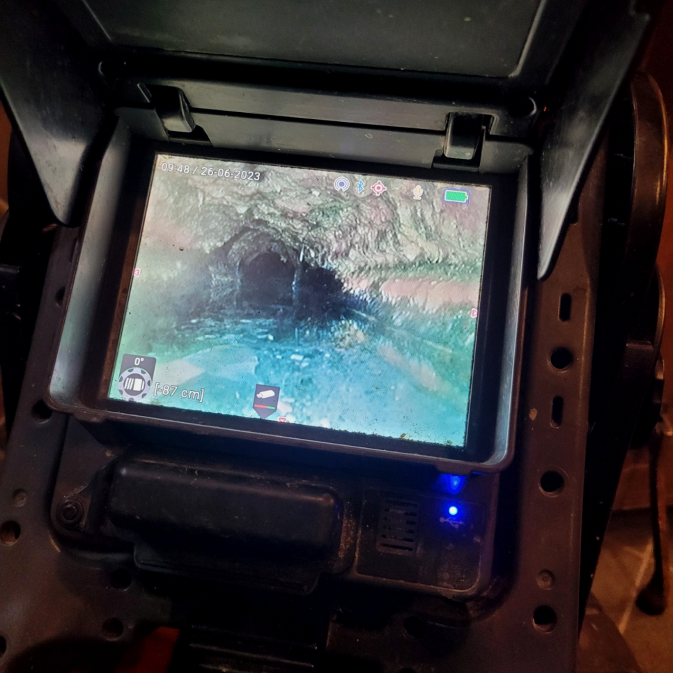
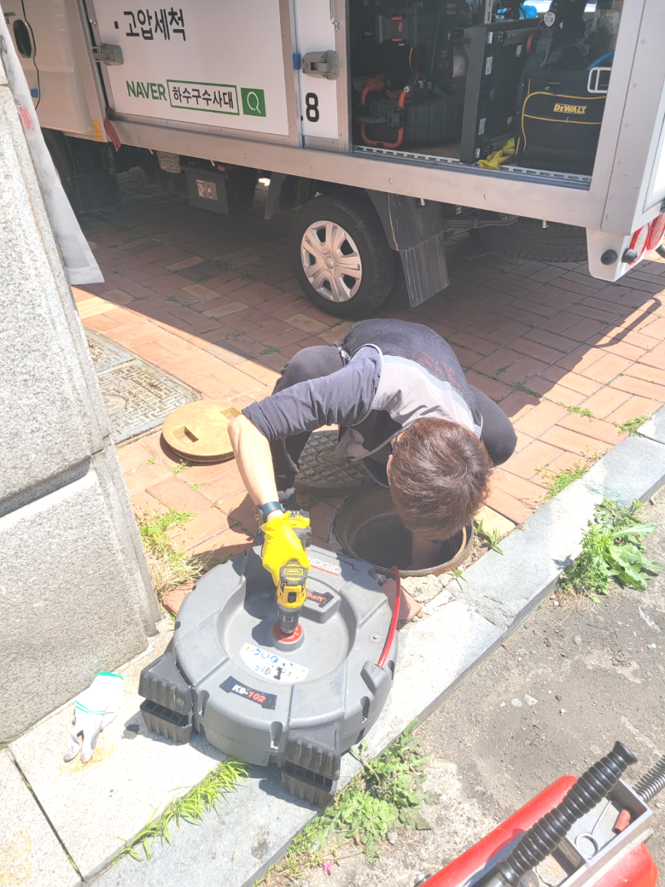

🏠 수원 평동하수구막힘 고색동 하수도역류 뚫음 설비업체
수원 고색동 싱크대막힘 전문 시공 후기

📋 작업 개요
- 위치: 수원 고색동, 고색동, 수원
- 서비스 유형: 싱크대막힘, 변기막힘, 하수구막힘, 배관막힘, 누수수리, 역류해결, 뚫는업체, 배관청소, 배관보수
- 작업 일시: 2023. 10. 9. 23:32
- 업체명: 하수구수사대 (010-5615-2118)
🔍 문제 상황
안녕하세요.
설비전문업체 "하수구수사대"를 찾아주셔서 감사합니다.
평상시처럼 주방에서 설거지를 하고 있는데 퇴수 물이 시원하게 빠지지 않는것 같은 느낌은 기분탓인가 하고 생각했던 분들 계시죠
물을 흐르는 곳에서 잘 사용을 하시다가 어느 순간 갑자기 퇴수물이 잘 안내려가고나 물이 역류하는 경우는 많은 곳에서 일어 날 수가 있습니다.
수원 평동하수구막힘 고색동 하수도역류 뚫음 설비업체

🔎 원인 분석
💡 전문가 진단: 수원 평동하수구막힘 고색동 하수도역류 뚫음 설비업체
만약에 작업을 했는데 퇴수완벽하게 통수가 안되었을 경우 생활하다보면 또 똑같은 현상이 발생하여 스트레스를 받게 되고 그때서야 추가작업을 의뢰해도 거절하는 곳이 많기 때문에 한번 할때 제대로된 업체에 의뢰하여 확실하게 하는것이 좋아요.
어떤 일이든 비 전문가는 절대 무리하게 뚫기 위한 시도를 해서는 안됩니다. 인터넷에서 쉽게 얻을수 있는 배출수정보들을 대부분 미비한 효과에서 그치고 근본적인 원인은 해결해 주지 못합니다.
뚫음 현장뿐만 아니라 부속품 교체를 하거나 누수현장도 실생활에 필요한 모든 부분들을 도와드리고 있어요. 혼자서 어려울 경우 저희 배수구뚤어드림을 통해 도움을 받아보세요. 어려운 현장이라고 하여도 항상 완벽하게 작업해 드려요.
막힘 증상은 느닷없이 발생된 것은 아니고 막힘의 전조증상이 보이면서 심각한 배출수막힘으로 전환이 되는 것입니다. 의뢰인께서 배출수막힘을 인식 못하셔서 줄곧 이용을 하다가 오물 덩어리가 배관으로 흘러 들어가 쌓이면서 심한 막힘이 나타나는겁니다.
우리는 배수구 막힘을 평소에 자주 겪지 않다 보니 안일하게 생각을 하고 있는 경우가 많은데요. 하지만 한번 배수구막힘이 발생을 하게 되면 여러 가지로 불편함을 겪을 수 있기 때문에 보다 빠르게 전문 업체를 통해서 해결을 하시는 것이 필요하다고 할 수 있습니다.

🔧 작업 과정
고객님도 곁에서 함께 확인하면서 눈으로 볼 수 없는 곳도 확인할 수 있는 게 신기하다고 말씀해 주셨습니다. 처음 이사 온 뒤 악취가 나는 것 같아 업체에 도움을 받고자 연락했지만 가벼운 체크만 하고 다른 관리가 없어서 답답했었다고 합니다.
어디를가든 예상보다도 많은수의 배관들이 있답니다.배수막힘은 싱크대나 화장실등등 어디를가나 존재하고있죠. 그러므로인해 지속적으로 관리하셔야하는데요.그런데도불구 막상건드리기는 어려우실겁니다
다음살펴볼내용은 적재적소에 쓰일수있는전문장비를 운용할수있는지 보셔야한답니다 배수구 전문장비에비해서는 확실한원인파악과 작업이제대로 이루어져야하나 그만큼이나 작업에있어서장비들이 빠질수없죠
말도없이견적가를 청구하는것이아닌 무엇때문에 견적비용이 청구됐는지 전문배관공과같이 배수내시경화면을 보여드리면서 상황에관해 설명드리고있어요
저희설비회사는 정직한것을 고집하고있으며 안좋은곳과 다르게 해결책을알려 드리고있어서 만족하실겁니다.배수막힘 위급하셔도 노하우가있으신분들이 고쳐드리고있어서 걱정되는생각은 덜어놓으셔도됩니다.
간단하게만 믿으셨다가 문제가더배로 커지게됩니다.지금이라도 안되는걸 생각하시고 있다면은 퇴수구 뚫으실려한생각을 그만두는게좋습니다!
배관 스케일링 검수 완료 후에는 주변 정리, 청소까지 완벽하게 해드리고 있으니 손 하나 까딱하실 필요 없이 저희들의 손만 빌리시면 됩니다.
회는 우리가 평소에 몸을 씻으면서 발생하는 비누거품과 각질들이 뭉쳐지고, 굳으면서 생기는 덩어리인데요, 이런 석회들은 하루아침에 발생하는 게 아니며 오랜 기간에 걸쳐 발생됩니다. 스케일링 작업을 진행할 때 퇴수내시경 장비는 꼭 사용해야 하는 장비인데요,


✅ 작업 완료
우리는 12개월 내로 다시 막히면 즉각 방문 드리고 아무 보수 없이 다시금 뚫어드립니다. 한차례 뚫어드릴 때 재발 없이 조치할 자신이 있기 때문입니다.
밤이든 낮이든 근무 중이기에 언제가 됐든 간에 의뢰해 주세요. 직접 보지 않고선 정확한 금액 안내가 힘들겠지만 기준 금액만큼은 말씀 가능하니 여쭙고 싶은 상황이 있으실 경우에는 전화 주시면 되십니다. 하수구가 막혀 대처하고 싶으시거나 상담을 원하실 경우 전화 걸어주세요!
#하수구막힘 #하수구뚫음 #하수구역류 #씽크대막힘 #싱크대역류 #오수관막힘 #하수구청소 #욕실하수구막힘 #변기막힘 #하수구뚫는비용 #싱크대수리 #화장실막힘




⚠️ 베란다 누수 및 방수 관리 방법
- ✅ 비가 많이 올 때 창틀 주변이나 아래층 천장에 얼룩이 생기는지 정기적으로 확인해 보세요.
- ✅ 우수관 주변 실리콘 마감이 들뜨거나 깨진 틈새가 있는지 손상 여부를 수시로 체크하세요.
- ✅ 베란다 바닥 타일의 줄눈(메지)이 소실되면 그 틈으로 물이 침투하여 누수가 유발됩니다.
- ✅ 누수 의심 증상 발견 시 방치하면 아래층 손실이 커지므로 즉시 전문가의 진단을 받으십시오.
💡 핵심 정리
- 확실한 장비 작업(내시경 점검 및 샤프트 스케일링)으로 원인을 뿌리 뽑습니다.
- 작업 후 1년 이내에 동일한 부위 재발 시 100% 무상 A/S 서비스를 보장합니다.
- 서울 · 경기 · 인천 전 지역에 24시간 언제든 긴급 출동할 수 있도록 항시 대기 중입니다.
❓ 자주 묻는 질문 (FAQ)
🚨 수원 고색동 싱크대막힘 문제로 고민이신가요?
정확한 원인 진단과 확실한 시공으로 재발 없는 해결을 약속드립니다.
24시간 긴급 출동 | 서울 · 경기 · 인천 전지역 | 1년 내 재발 시 무상 A/S